우간다[Bugisu]
우간다[Bugisu]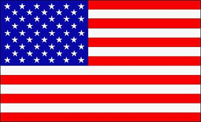미국 하와이[Kona]
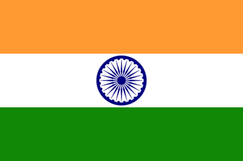인도[Monsooned Malabar AA]
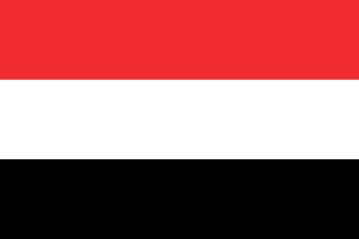예멘[Mattar]
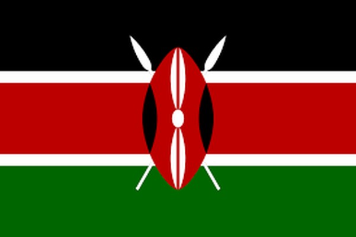케냐[Kenya AA]
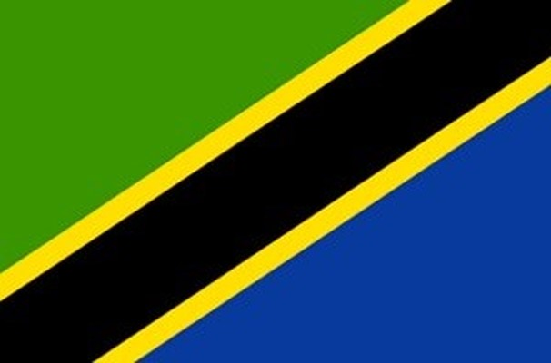탄자니아[Tanzania Kilimanjaro]
우간다[Bugisu]
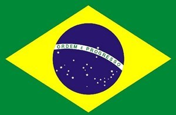브라질[Brazil Santos No2]
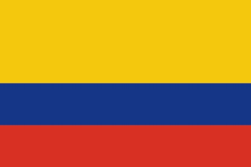콜롬비아[Colombian Supremo]
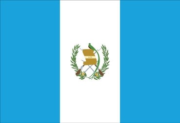과테말라[Antigua SHB]
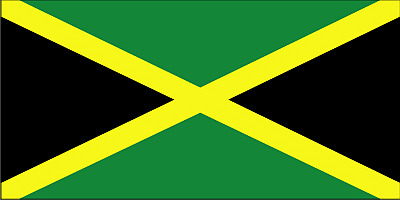자메이카[Jamaica Blue mountion]
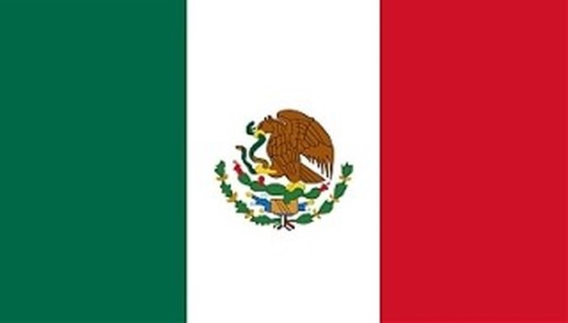멕시코[Altura Coatepec]
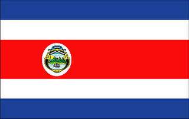코스타리카[Coral Mountain]
(이 밖에도 더 많은 나라가 있다.)